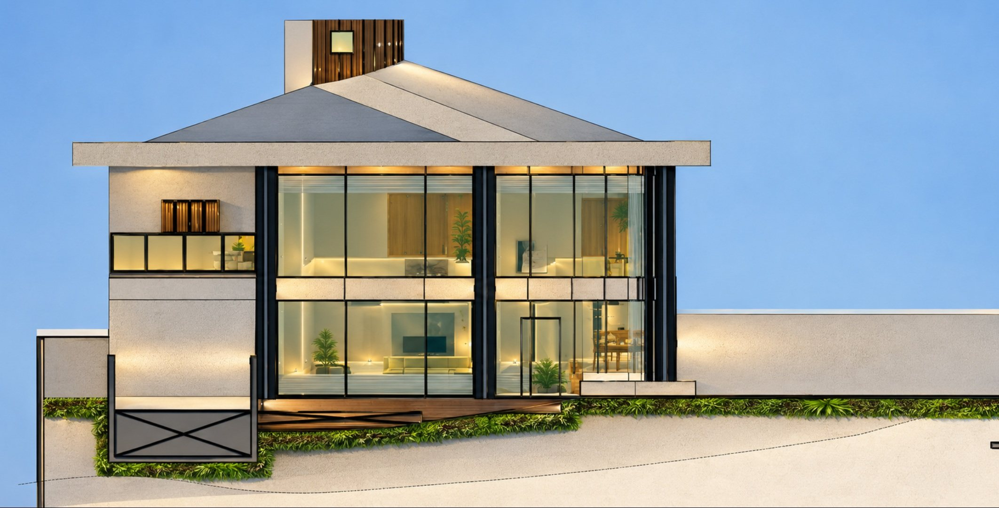
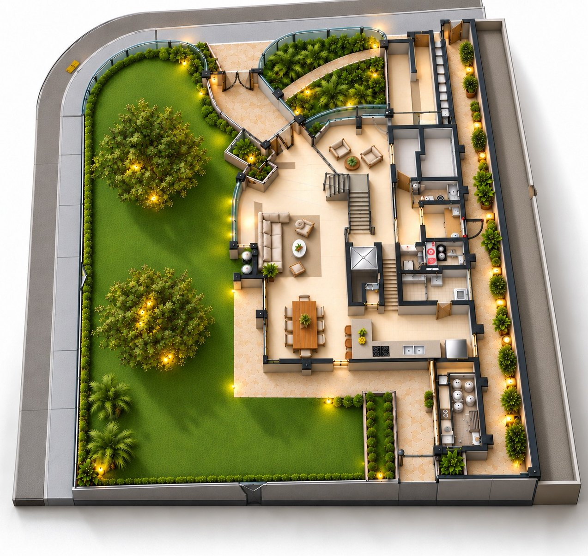
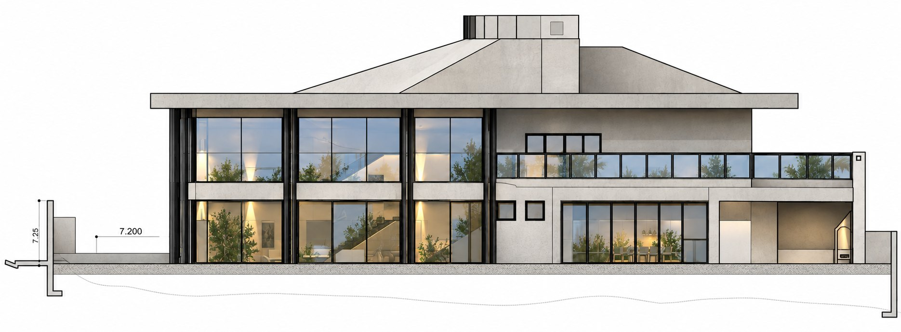

01
Residência Sustentável
Morro da Nova Cintra · Santos / SP

Concebida para valorizar a luz, as vistas e os recursos naturais do terreno. A fachada envidraçada e curva cria continuidade visual entre a sala de pé-direito duplo e o jardim.
Os pavimentos acompanham a topografia: dormitórios e estar íntimo em cima, garagem e casa do caseiro no subsolo.
- Captação de água da chuva
- Energia solar
- Iluminação natural
- Eficiência energética
- Integração e ventilação

